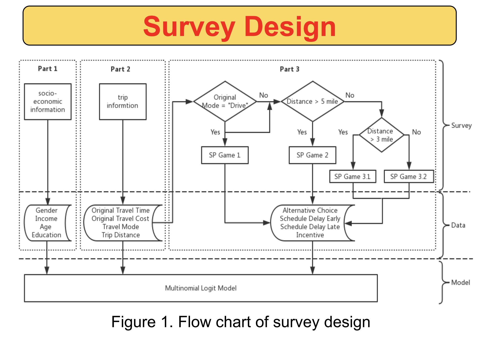
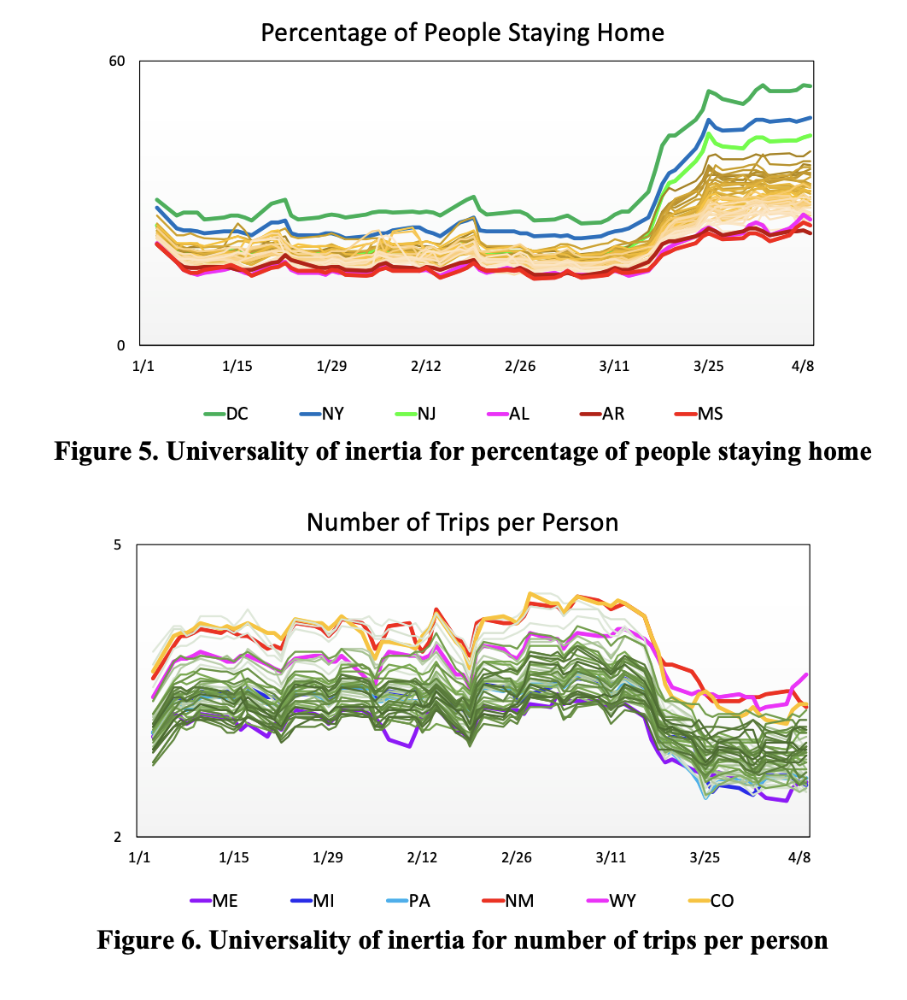

Jun Zhao, Ph.D. — Publications
Postdoctoral Research Associate in the
Journal Papers
- Wang, L.*, Jiang, Z., Hu, C.*, Zhao, J., Zhu, Z.+, Chen, X.+, & Lee, D. H. (2025).
Comparing AI and human decision-making mechanisms in daily collaborative experiments. iScience, 28(6).
This study tests performance of AI in daily decision-making, comparing humans, LLMs, and reinforcement learning (RL) in a multi-day commute decision-making game. We examined various performance metrics, including overall system results, system convergence progress, individual decision dynamics, and individual decision mechanisms. The results show that LLMs display human-like learning from experience and achieve convergence in individual decisions but struggle in collaboration, showing limited awareness of others’ choices, weak group decision-making, and poor physical reasoning.


- Lee, M., Zhao, J., Sun, Q., Pan, Y., Zhou, W., Xiong, C., Zhang, L.+ (2020).
Human mobility trends during the early stage of the COVID‑19 pandemic in the United States . PloS One, 15(1).
This study examines U.S. mobility trends from January to early April 2020 to assess public responses to COVID-19. Using aggregated mobile device data, it identifies spatial, temporal, and demographic variations in movement and teleworking. Mobility declined across all metrics nationwide after the emergency declaration, with more people staying home even before mandates. Teleworking growth reinforced this trend. Differences appeared across income and population density groups. Findings show public behavior aligned with government guidance to stay at home.
- Xiong, C., Shahabi, M., Zhao, J., Yin, Y., Zhou, X., Zhang, L.+ (2019).
An integrated and personalized traveler information and incentive scheme for energy‑efficient mobility systems , Transportation Research Part C: Emerging Technologies, 113, 57-73.
This paper develops an integrated and personalized traveler information and incentive scheme to incentivize more energy-efficient travel and mobility decisions. The study uses behavioral research and empirical modeling to quantify personalized monetary incentives, integrated with a control optimizer for efficient allocation. A case study in the Washington D.C. and Baltimore regions demonstrates the system’s effectiveness, achieving significant energy savings at a system level. The study also offers valuable insights into individual travel behavior, and demonstrates strong computational performance for large-scale transportation management.

* Co-advise Student
Conference Papers
- Zhao, J., Xiong, C., Ji, Y., Zhang, L. (2020).
Analyzing Travel Behavior Responses under Personalized Incentives with Interpretable Economic Infomation . Transportation Research Board (TRB) 2020 Annual Meeting. - Zhao, J., Xiong, C., Zhang, L. (2018).
A Joint Revealed and Stated Preference Analysis of Travel Behavioral Responses to Monetary Incentives . Transportation Research Board (TRB) 2018 Annual Meeting. - Zhao, J., Xiong, C., Yang, D., Liang, T., Zhang, L. (2018).
A Wide‑and‑Deep Learning Model of Travel Mode Detection . International Symposium on Emerging Trends in Transportation (ISETT).

- Click for full poster!
Preprint Papers
- Zhao, J., Lee, M., Ghader, S., et al. (2020).
Quarantine Fatigue: first‑ever decrease in social distancing measures after the COVID‑19 pandemic outbreak before reopening United States . arXiv preprint.
This study analyzed U.S. mobility changes during COVID-19 using an integrated data panel and the Social Distancing Index (SDI). Results revealed a plateau in early April followed by a universal SDI decline, more trips, and fewer people staying home—termed “quarantine fatigue.” The phenomenon began around April 15, before official reopenings, indicating premature relaxation of distancing. The synchronized nationwide trend highlights the need for coordinated policy to prevent future outbreaks.


- Ghader, S., Zhao, J., Lee, M., Zhou, W., Zhao, G., Zhang, L. (2020).
Observed mobility behavior data reveal social distancing inertia . arXiv preprint.
This study used integrated location, COVID-19, and census data to examine the pandemic’s impact on U.S. mobility. It identified a “social distancing inertia,” where mobility metrics improved voluntarily after initial COVID-19 cases but plateaued within two weeks despite rising infections. This indicates a natural behavioral limit to social distancing. The inertia effect appeared consistently across all states and metrics, independent of case timelines or government interventions.